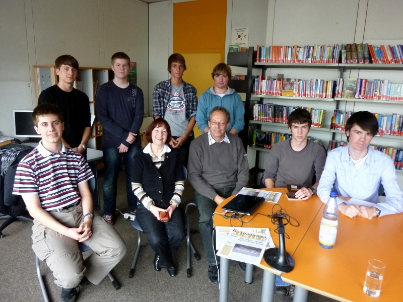
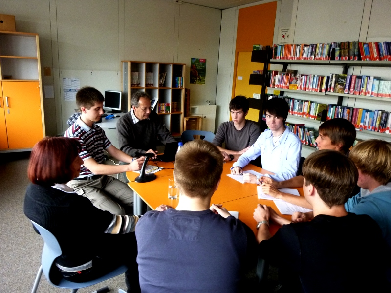

Ursula Breitbart
Ursula Breitbart wurde 1937 in Berlin geboren.
Ihr Vater Schlesinger war jüdischer Herkunft und hatte eine protestantische Christin zur Frau genommen.
Er hatte Kaufmann gelernt, jedoch musste er während der Diktatur schwere körperliche
Arbeit leisten und arbeitete zuerst beim Bau und dann in einer Kartonage-Fabrik.
Ihre Mutter war Hausfrau und verdiente nebenbei als Näherin von Kleidung einen geringen Betrag für die Familie.
Schon vor 1933 war die Familie Anfeindungen ausgesetzt,
aber erst mit der Machtergreifung begannen die eigentlichen Gewalttaten.
Als das Unheil seinen Lauf nahm und die Nationalsozialisten am 30. Januar 1933 die Macht übernahmen,
trat die Mutter aus dem Judentum aus und wurde wieder Christin.
Dies hatte sie unternommen, da es christlichen Ehepartner möglich war,
ihren jüdischen Partner vor schlimmen Anfeindungen zu schützen. Dies nannte man "privilegierte Ehe".
Diese schützte zwar nur für eine gewisse Zeit, war aber trotzdem ein wertvoller Schutz gegen den Staat.
Jedoch half es nicht besonders gegen öffentliche Übergriffe.
So wurde 1936 ihr Vater in der Berliner U-Bahn angepöbelt und auch angegriffen.
Als ihre Mutter dazwischen gehen wollte, bekam sie einen derartigen Schlag auf die Niere,
dass sie ihre Niere verlor und diese operativ entfernt werden musste.
Anfangs hatte die Familie vor, nach Schanghai zu fliehen,
jedoch konnten sie es sich wegen der immer höheren Preise für die Flucht nicht leisten.
Nachdem die Zeit des Schutzes abgelaufen war und auch die christliche Religion der Mutter nicht mehr half,
verschlimmerte sich die Situation.

So saß ihr Vater saß für kurze Zeit mit vielen anderen Juden im Gefängnis in der Rosenstraße,
jedoch wurden sie aufgrund der Standhaftigkeit ihrer Frauen nach ungefähr 4 Wochen wieder freigelassen werden.
Denn die Frauen gingen jeden Tag vor das Gefängnis und veranstalteten
eine friedliche Demonstration und so konnten sie ihre Männer wiedererlangen.
Zeitweilig wurde die junge Ursula deshalb von ihren Großeltern mütterlicherseits aufgenommen,
die evangelisch waren und sie versteckten.
Die junge Ursula musste viele Einschränkungen hinnehmen, die ihre Kindheit prägten.
So durfte die kleine Ursula weder in den Kindergarten gehen noch in die Schule gehen.
Auch auf der Straße musste sie sich unauffällig verhalten und durfte zumeist nicht mit anderen Kindern spielen.
Ihre Mutter sagte: "Wenn dich jemand fragt, wie du heißt, dann sagst du Ursel und sonst nichts",
woraufhin die kleine Ursel auf die Frage nach dem Namen immer mit "Ursel und sonst gar nichts" beantwortete.
Ihre einzigen Helfer in dieser finsteren Zeit waren die Verwandte ihrer Mutter.
So half den Schlesingers vor allem eine Schwägerin ihrer Mutter,
die sie mit Karten und Kleidungsstücken versorgte.
In dem Haus, in dem die Schlesinger lebten, gab es noch 7 andere Familien, die zwar Mitglieder der Partei waren,
jedoch nicht gegen sie unternahmen. Die Familie war auf ihre Anständigkeit angewiesen,
da sie als Juden offiziell den Luftschutzbunker nicht betreten durften.
Ein weiteres einschneidendes Ereignis der damaligen Zeit war die
Deportation ihrer 80-jährigen Großmutter väterlicherseits.
Sie wurde nach Theresienstadt verschleppt, während ihr Sohn zusehen musste.
Für die kleine Ursula war dieses Ereignis prägend.
Alle drei Geschwister ihres Vaters wurden ermordet, worunter ihr Vater psychisch sehr litt.
So sah er 1943 bereits 20 Jahre älter aus, als er war. Damals war er 38.
Nach Kriegsende durch die russische Besatzung in Berlin wurde die junge Ursel eingeschult.
Überschattet wurde dieses Jahr jedoch durch den Tod ihres Vaters,
der aufgrund der psychischen Erschöpfung und eines Herzinfarkts verstarb.
Ihre Mutter musste nun allein für den Unterhalt und die Erziehung ihrer Tochter sorgen und wurde 69 Jahre alt.
Während ihrer Schulzeit übersprang sie eine Stufe und konnte so 1957 ihre Reifeprüfung ablegen.
In der 11. Klasse ereignete sich ein letztes Vorfall:
Während des Geschichtsunterrichts in der Pause malte ein Mitschüler auf ihren Tisch einen Magen David,
einen Davidstern, was Ursula sie sehr schmerzte.
Zwar wurde der Täter entlarvt und der Schule verwiesen,
doch der Stachel blieb, wie sie selbst sagt.
Erst 10 Jahre später bekam sie eine Entschuldigung.
Lebenslauf:
- 1933 Die Mutter tritt zum Protestantismus über
- 1936: Ihre Mutter verliert eine Niere während eines Übergriffes in der U-Bahn
- 1937 geboren
- 1943 Januar Die Großmutter der jungen Ursel wird deportiert.
- 1943 Februar/März Der Vaterwird inhaftiert in der Rosenstraße,
- 1945 stirbt ihr Vater im Dezember aufgrund eines Herzinfarkts